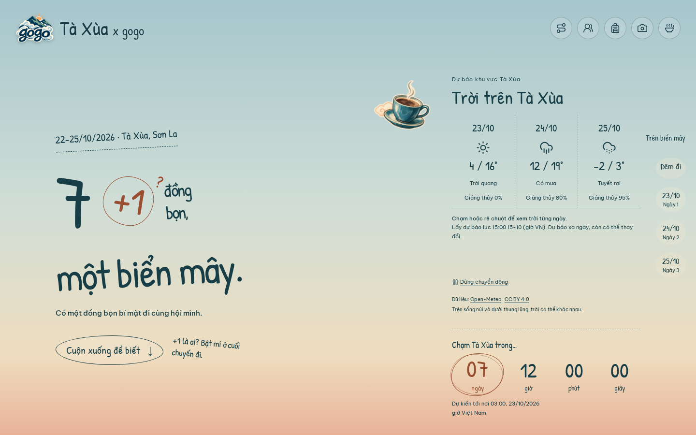
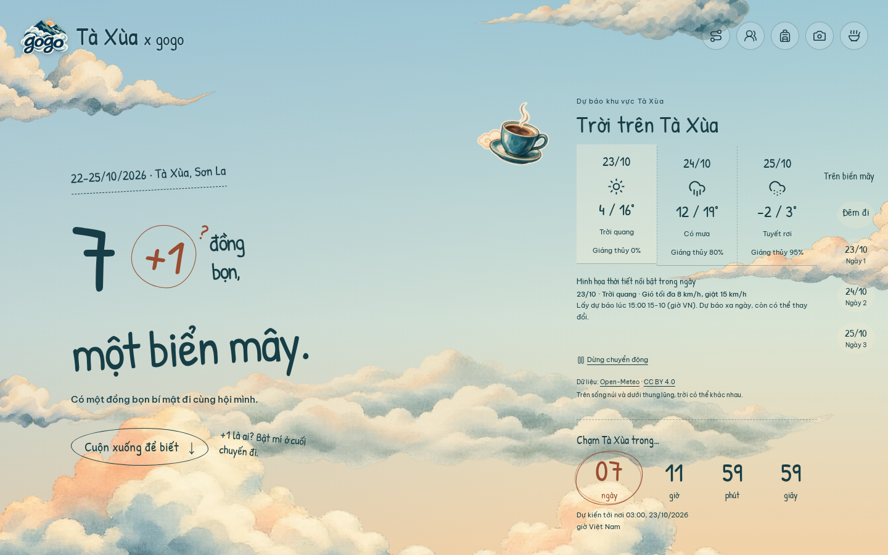
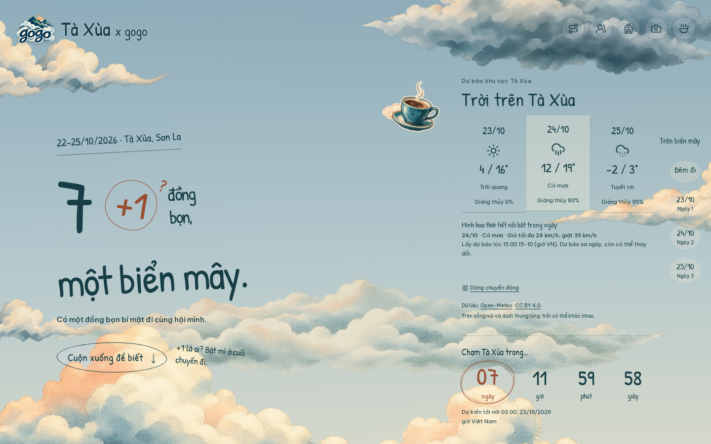
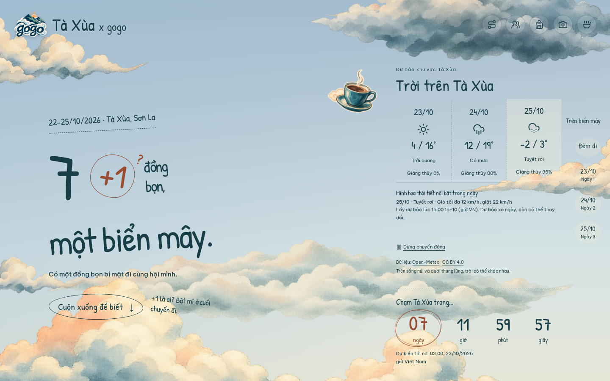
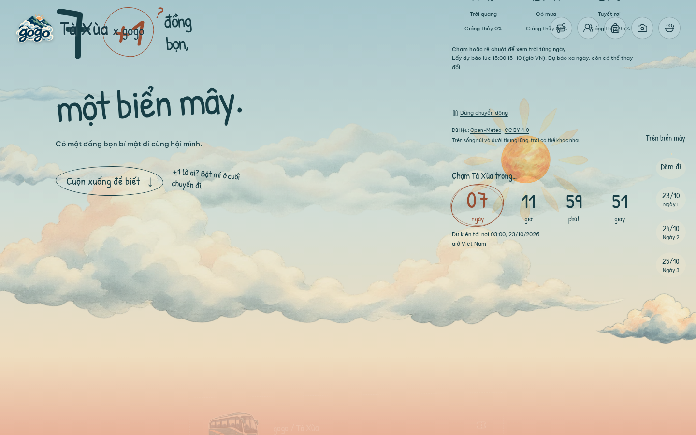
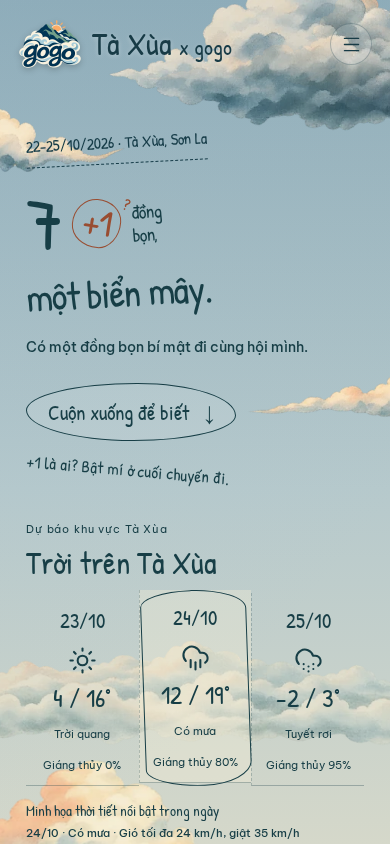
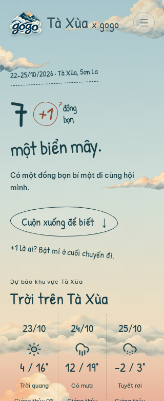
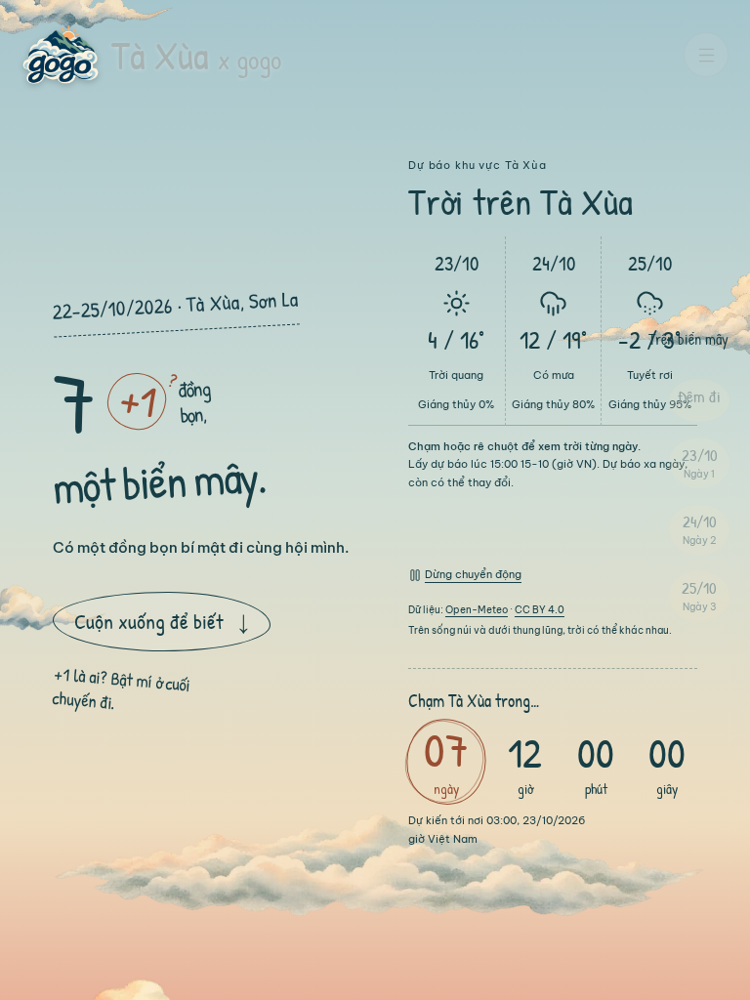
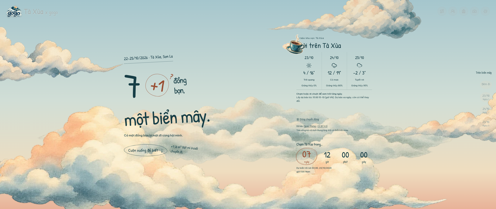

Browser review on 15 October 2026. 1016 checks passed across weather, scenery, motion, reveals, countdown and journey. Chromium emulation covers desktop, phone, narrow, tablet, wide and short landscape; physical devices, Safari and Firefox were not tested.
Weather screenshots use deterministic fixtures, including the snow example. They are not current forecasts. The separate live API smoke returned HTTP 200 for 23–25 October.
80 weather checks · Regression results · Live API smoke








